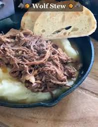

Wolf Stew
I found this on tik tok

Ingredients
- 3lbs beef chuck roast
- 1-2 onions
- Lots of garlic
- Beef broth
- Mashed potatoes of your choice
- Heavily salt the beef up to 24 hours in advance. The salt absorbs into the meat, so the longer the wait the more salt you can use
- Julienne the onions and mince the garlic
- Clean off any extra salt from the waiting Beef
- Cut the beef into 4-6 chunks
- Season the beef with salt, pepper, chili powder, and whatever else. I like to use lime adobo seasoning
- Oil the instant pot and set to saute
- Saute the beef chunks until all side have a nice brown crust
- Add the onions to the instant pot and saute until they're soft and starting to brown
- Add the garlic and saute the onions and garlic until fragrant and soft
- Add 2 cups of beef broth the the pot, breaking up and disolving any fond
- Add the beef and pressure cook on high for 1hr
- When it's done, break apart at large chunks of meat with a fork and server with artisan bread and mashed potatoes